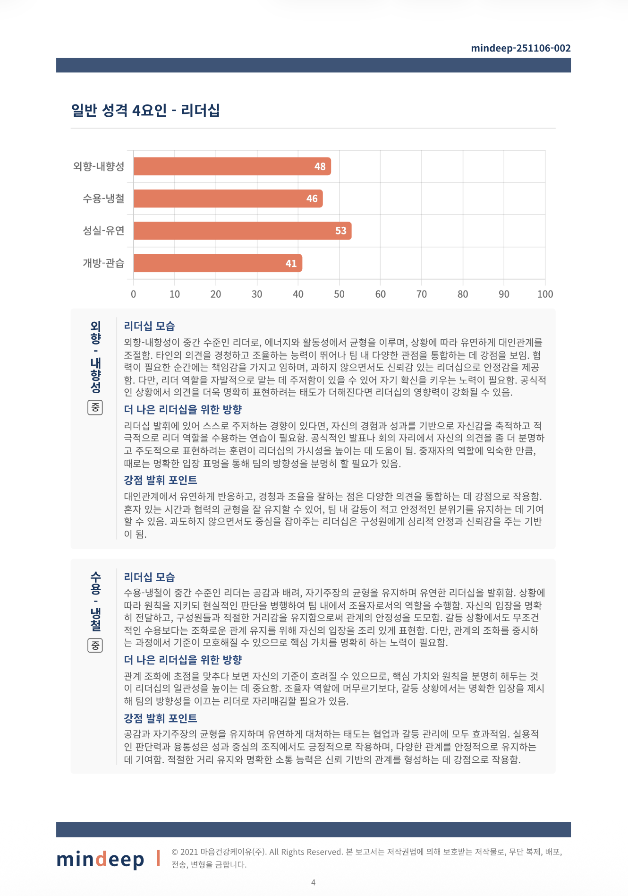
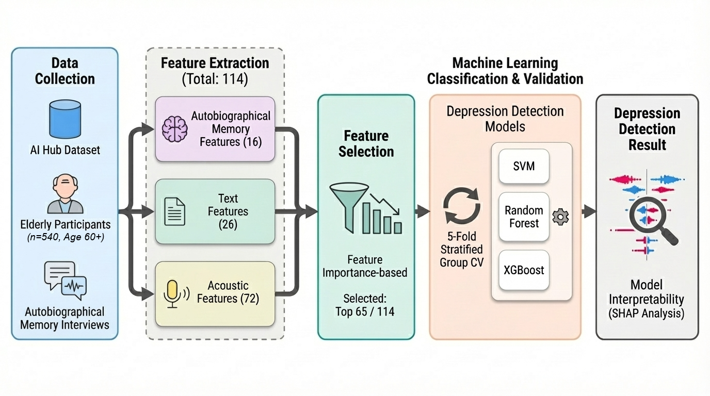

다봄. AMT 채점. 성격 평가. BDPI 보고서. 스크리닝. 우울 분류.
On-Device LLM · Autobiographical Memory Training
AMT (Autobiographical Memory Test) Auto-Scoring · On-Device
LLM-Based Personality Assessment from Structured Interviews
Automated BDPI Leadership Report Generation

LLM Screening Agent · Social Isolation Interview
Multimodal ML on Autobiographical Memory Interviews
